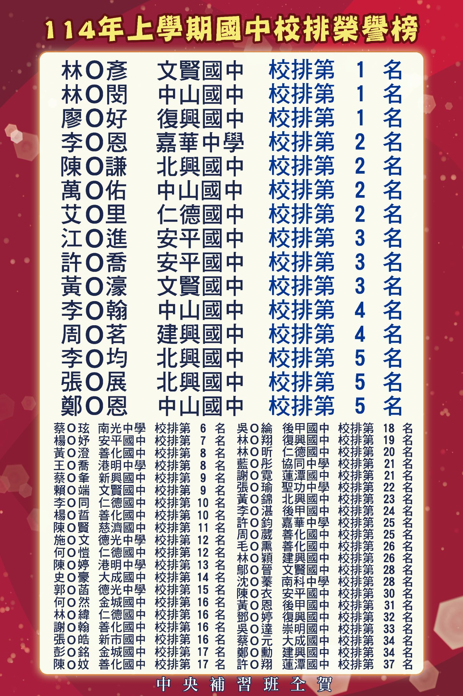
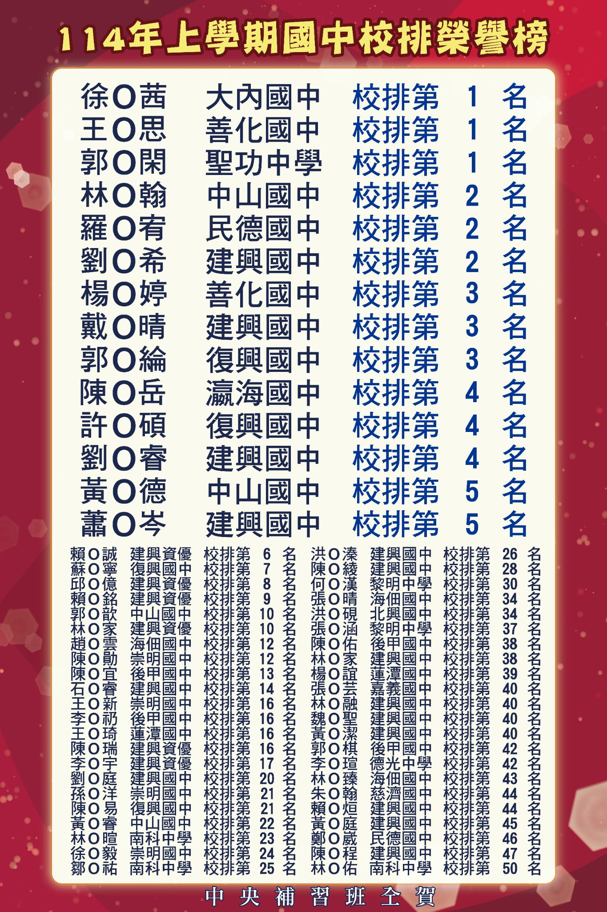
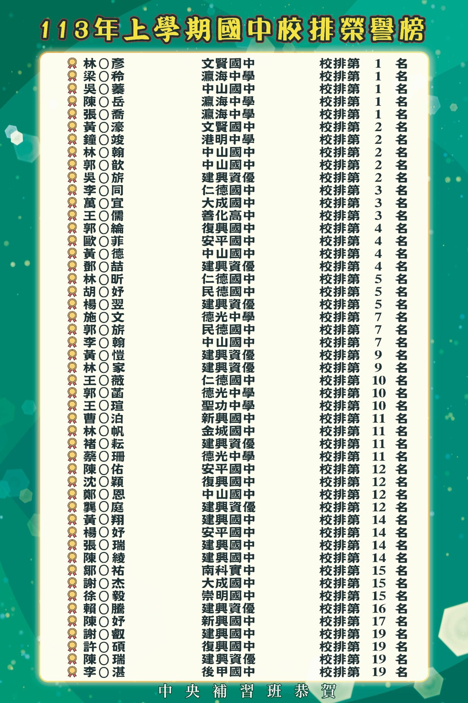
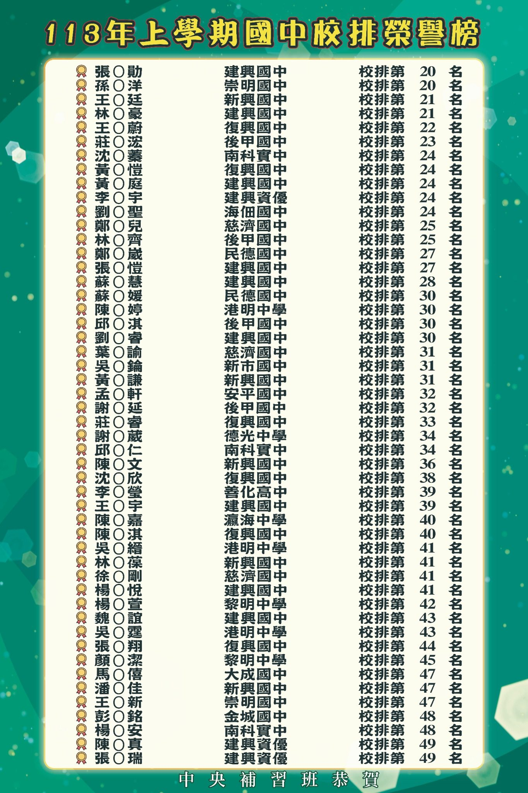
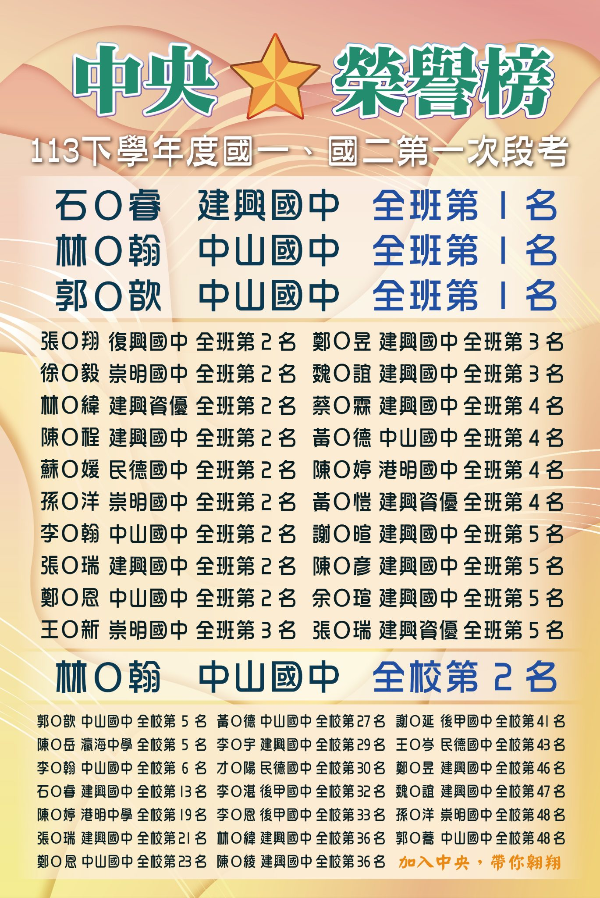
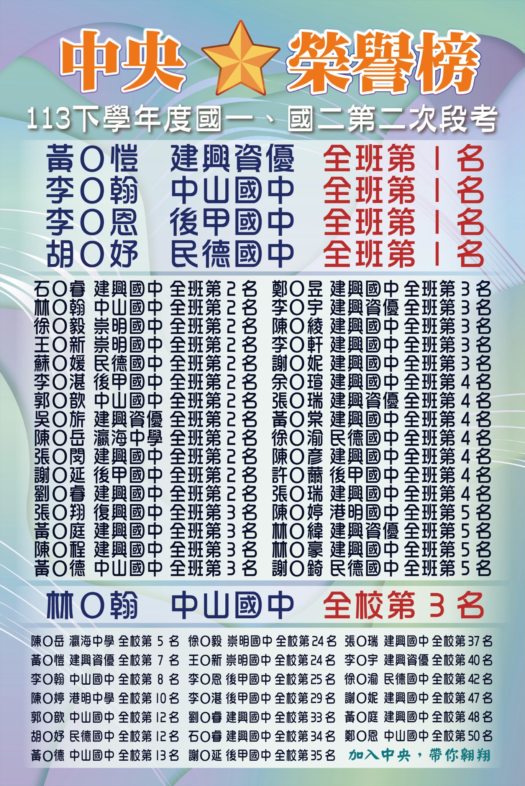
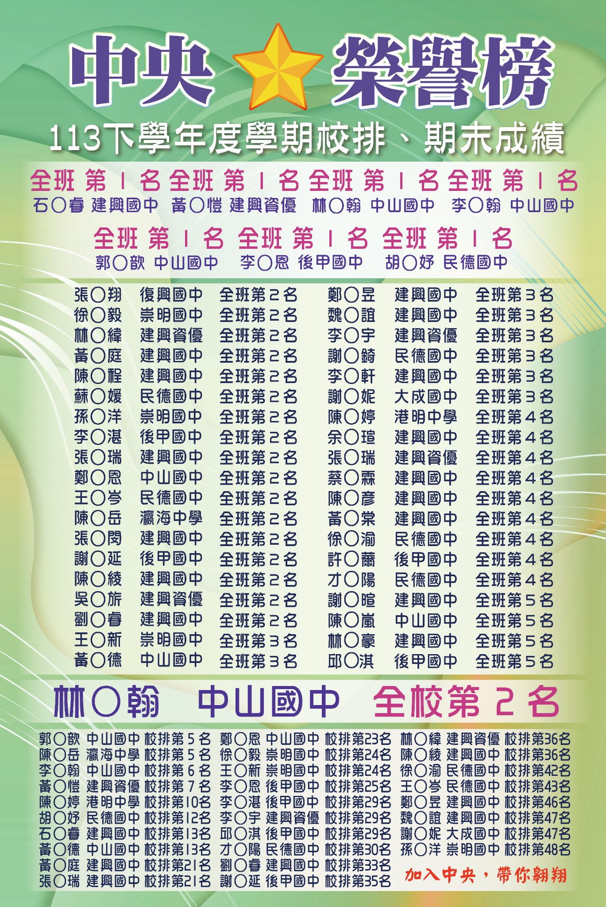

資優數學訓練
不只練基本題，更重視解題邏輯、思考深度與高階題型，幫孩子逐步建立資優競爭力。
Honor Roll
從段考排名、校排表現到國中榮譽榜，中央補習班長期陪伴學生累積真正的升學競爭力。







Elite Method
中央補習班以資優培養為主軸，從觀念打底、題型訓練、段考追蹤到榜單成果，陪孩子一步步累積真正的升學競爭力。
不只練基本題，更重視解題邏輯、思考深度與高階題型，幫孩子逐步建立資優競爭力。
透過段考成果、校排表現與學習狀況追蹤，讓孩子知道自己下一步該補強什麼。
從國中自然、理化到高中數理先修，提前降低升學斷層，讓孩子開學後更有餘裕。
以真實段考、校排與升學成果檢驗學習成效，讓努力不是感覺，而是看得見的結果。
Why Summer
中央補習班把暑期課程設計成「資優養成＋升學銜接＋段考準備」三合一規劃。
不只預習新進度，更提前建立高階題型所需的觀念深度與解題邏輯。
針對數學、自然、理化等關鍵科目，訓練孩子看懂題目、拆解題型、穩定作答。
以段考、校排、會考與升學表現為目標，讓學習成果能被家長清楚看見。
Elite Advantage
一般暑期班解決的是「跟上進度」，中央補習班更重視「超前理解、進階思考、榜單成果」。讓孩子不是只會寫作業，而是有能力面對更高強度的段考與升學競爭。
預約程度檢測培養高階思考、解題邏輯與競爭力，不只完成學校進度。
暑假提前補強弱點、銜接新學期內容，降低開學落差。
從平時段考、校排表現到會考升學，讓成果累積成信任。
依孩子程度安排學習重點，知道該補什麼、練什麼、提升什麼。
Popular Programs
不只是暑假安親，而是讓孩子在暑假建立下學期需要的學習能力。
Advantages
把「補課」升級成「資優培養系統」，讓家長看見更清楚的學習路徑與成果承諾。
從觀念、邏輯、解題策略訓練孩子面對高階題型的能力。
以數學、自然、理化為核心，打造中央補習班最鮮明的品牌記憶點。
用校排、段考、進步榜與升學成果，讓家長快速理解教學成效。
建中校與成功校共同承接台南在地家長的升學需求。
Free Trial
留下孩子目前年級與想加強的科目，我們協助建議適合班別與暑期規劃。
Contact